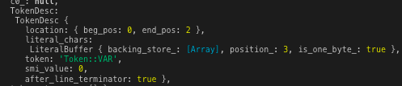

上一篇讲了字符串的解析过程，这一篇来讲讲标识符(IDENTIFIER)的解析。
先上知识点，标识符的扫描分为快解析和慢解析，一旦出现Ascii编码大于127的字符或者转义字符，会进入慢解析，略微影响性能，所以最好不要用中文、特殊字符来做变量名(不过现在代码压缩后基本不会有这种情况了)。
每一位JavaScript的初学者在学习声明一个变量时，都会遇到标识符这个概念，定义如下。
第一个字符，可以是任意Unicode字母（包括英文字母和其他语言的字母），以及美元符号（$）和下划线（_）。第二个字符及后面的字符，除了Unicode字母、美元符号和下划线，还可以用数字0-9。
笼统来讲，v8也是通过这个规则来处理标识符，下面就来看看详细的解析过程。
老规矩，代码我丢github上面，接着前面一篇的内容，进行了一些整理，将文件分类，保证下载即可运行。
链接：https://github.com/pflhm2005/V8ToJS
待解析字符如下。
var目的就是解析这个var关键词。
首先需要完善Token映射表，添加关于标识符的内容，如下。
const TokenToAsciiMapping = (c) => {
return c === '(' ? 'Token::LPAREN' :
c == ')' ? 'Token::RPAREN' :
// ...很多很多
c == '"' ? 'Token::STRING' :
c == '\'' ? 'Token::STRING' :
// 标识符部分单独抽离出一个方法判断
IsAsciiIdentifier(c) ? 'Token::IDENTIFIER' :
// ...很多很多
'Token::ILLEGAL'
};在那个超长的三元表达式中添加一个标识符的判断，由于标识符的合法字符较多，所以单独抽离一个方法做判断。
方法的逻辑只要符合定义就够了，实现如下。
/**
* 判断给定字符(数字)是否在两个字符的范围内
* C++通过static_cast同时处理了char和int类型 JS就比较坑了
* 这个方法其实在C++超简单的 然而用JS直接炸裂
* @param {char} c 目标字符
* @param {char} lower_limit 低位字符
* @param {chat} higher_limit 高位字符
*/
export const IsInRange = (c, lower_limit, higher_limit) => {
if(typeof lower_limit === 'string' && typeof higher_limit === 'string') {
lower_limit = lower_limit.charCodeAt();
higher_limit = higher_limit.charCodeAt();
}
if(typeof c === 'string') c = c.charCodeAt();
return (c >= lower_limit) && (c <= higher_limit);
}
/**
* 将大写字母转换为小写字母 JS没有char、int这种严格类型 需要手动搞一下
*/
const AsciiAlphaToLower = (c) => { return String.fromCharCode(c.charCodeAt() | 0x20); }
/**
* 数字字符判断
*/
const IsDecimalDigit = (c) => {
return IsInRange(c, '0', '9');
}
/**
* 大小写字母、数字
*/
const IsAlphaNumeric = (c) => {
return IsInRange(AsciiAlphaToLower(c), 'a', 'z') || IsDecimalDigit(c);
}
/**
* 判断是否是合法标识符字符
*/
const IsAsciiIdentifier = (c) => {
return IsAlphaNumeric(c) || c == '$' || c == '_';
}v8内部定义了很多字符相关的方法，这些只是一部分。比较有意思的是那个大写字母转换为小写，一般在JS中都是toLowerCase()一把梭，但是C++用的是位运算。
方法都比较简单，可以看到，大小写字母、数字、$、_都会认为是一个合法标识符。
得到一个Token::IDENTIFIER的初步标记后，会进入单个Token的解析，即Scanner::ScanSingleToken(翻上一篇)，在这里，也需要添加一个处理标识符的方法，如下。
class Scanner {
/**
* 单个词法的解析
*/
ScanSingleToken() {
let token = null;
do {
this.next().location.beg_pos = this.source_.buffer_cursor_ - 1;
if(this.c0_ < kMaxAscii) {
token = UnicodeToToken[this.c0_];
switch(token) {
/**
* 在这里添加标识符的case
*/
case 'Token::IDENTIFIER':
return ScanIdentifierOrKeyword();
// ...
}
}
/**
* 源码中这里处理一些特殊情况
* 特殊情况就包括Ascii编码过大的标识符 特殊情况暂不展开
*/
} while(token === 'Token::WHITESPACE')
return token;
}
}上一篇这里只有Token::String，多加一个case就行。一般情况下，所有字符都是普通的字符，即Ascii编码小于128。如果出现类似于中文这种特殊字符，会进入下面的特殊情况处理，现在一般不会出现，这里就不做展开了。
接下来就是实现标识符解析的方法，从名字可以看出，标识符分为变量、关键词两种类型，那么还是需要再弄一个映射表来做类型快速判断，先来完善上一篇留下的尾巴，字符类型映射表。
里面其实还有一个映射表，叫character_scan_flag，也是对单个字符的类型判定，属于一种可能性分类。
之前还以为这个表很麻烦，其实挺简单的(假的，恶心了我一中午)。表的作用如上，通过一个字符，来判断这个标识符可能是什么东西，类型总共有6种情况，如下。
/**
* 字符类型
*/
const kTerminatesLiteral = 1 << 0;
const kCannotBeKeyword = 1 << 1;
const kCannotBeKeywordStart = 1 << 2;
const kStringTerminator = 1 << 3;
const kIdentifierNeedsSlowPath = 1 << 4;
const kMultilineCommentCharacterNeedsSlowPath = 1 << 5;这6个枚举值分别表示：
始终需要记住，这只是一种可能性类型推断，并不是断言，只能用于快速跳过某些流程。
有了标记和对应定义，下面来实现这个字符类型推断映射表，如下。
const GetScanFlags = (c) => {
(!IsAsciiIdentifier(c) ? kTerminatesLiteral : 0) |
((IsAsciiIdentifier(c) && !CanBeKeywordCharacter(c)) ? kCannotBeKeyword : 0) |
(IsKeywordStart(c) ? kCannotBeKeywordStart : 0) |
((c === '\'' || c === '"' || c === '\n' || c === '\r' || c === '\\') ? kStringTerminator : 0) |
(c === '\\' ? kIdentifierNeedsSlowPath : 0) |
(c === '\n' || c === '\r' || c === '*' ? kMultilineCommentCharacterNeedsSlowPath : 0)
}
// UnicodeToAsciiMapping下标代表字符对应的Ascii编码 上一篇有讲
const character_scan_flags = UnicodeToAsciiMapping.map(c => GetScanFlags(c));对照定义，上面的方法基本上不用解释了，用到了我前面讲过的一个技巧bitmap(文盲不懂专业术语，难怪阿里一面就挂了)。由于是按照C++源码写的，上述部分工具方法还是需要挨个实现。源码用的宏，写起来一把梭，用JS还是挺繁琐的，具体代码我放github了。
有了这个映射表，后面很多地方就很方便了，现在来实现标识符的解析方法。
实现之前，来列举一下可能出现的标识符：var、vars、avr、1ab、{ '\a': 1 }、吉米(\u5409\u7c73)，这些标识符有些合法有些不合法，但是都会进入解析阶段。所以总的来说，方法首先保证可以处理上述所有情况。
对于数字开头的标识符，其实在case阶段就被拦截了，虽然说数字1也会出现在一个IDENTIFIER中，但是1会首先被优先解析成'Token::Number'，有对应的方法处理这个类型，如下。
case 'Token::STRING':
return this.ScanString();
// 数字开头
case 'Token::NUMBER':
return ScanNumber(false);
case 'Token::IDENTIFIER':
return ScanIdentifierOrKeyword();所以1ab这种情况不用考虑，实现方法如下。
Scanner::ScanIdentifierOrKeyword() {
this.next().literal_chars.Start();
return this.ScanIdentifierOrKeywordInner();
}
Scanner::ScanIdentifierOrKeywordInner() {
/**
* 两个布尔类型的flag
* 一个标记转义字符 一个标记关键词
*/
let escaped = false;
let can_be_keyword = true;
if(this.c0_ < kMaxAscii) {
// 转义字符以'\'字符开头
if(this.c0_ !== '\\') {
let scan_flags = character_scan_flags[this.c0_];
// 这个地方比较迷 没看懂
scan_flags >>= 1;
this.AddLiteralChar(this.c0_);
this.AdvanceUntil((c0) => {
// 当某个字符的Ascii编码大于127 进入慢解析
if(c0 > kMaxAscii) {
scan_flags |= kIdentifierNeedsSlowPath;
return true;
}
// 叠加每个字符的bitmap
let char_flags = character_scan_flags[c0];
scan_flags |= char_flags;
// 用bitmap识别结束标记
if(TerminatesLiteral(char_flags)) {
return true;
} else {
this.AddLiteralChar(c0);
return false;
}
});
// 基本上都是进这里 快分支
if(!IdentifierNeedsSlowPath(scan_flags)) {
if(!CanBeKeyword(scan_flags)) return 'Token::IDENTIFIER';
// 源码返回一个新的vector容器 这里简单处理成一个字符串
let chars = this.next().literal_chars.one_byte_literal();
return this.KeywordOrIdentifierToken(chars, chars.length);
}
can_be_keyword = CanBeKeyword(scan_flags);
} else {
escaped = true;
let c = this.ScanIdentifierUnicodeEscape();
// 合法变量以大小写字母_开头
if(c === '\\' || !IsIdentifierStart(c)) return 'Token::ILLEGAL';
this.AddLiteralChar(c);
can_be_keyword = CharCanBeKeyword(c);
}
}
// 逻辑同上 进这里代表首字符Ascii编码就过大
return ScanIdentifierOrKeywordInnerSlow(escaped, can_be_keyword);
}感觉C++的类方法实现的写法看起来很舒服，博客里也这么写了，希望JavaScript什么时候也借鉴一下，貌似::在JS里目前还不是一个运算符，总之真香。
首先可以发现，标识符的解析也用到了Literal类，之前说这是用了字符串解析并不准确，因此我修改了AdvanceUntil方法，将callback作为参数传入。启动类后，扫描逻辑如下。
v8中字符相关的工具方法就单独搞了一个cpp文件，里面方法非常多，后续如果是把v8全部翻译过来估计也要分好多文件了，先这样吧。
先不管慢解析了，大部分情况下也不会用中文做变量，类似于zzz、jjj的变量会快速跳出，标记为"Token::IDENTIFIER"。而可能是关键词的标识符，比如上面列举的var、vars、avr，由于或多或少的具有一些关键词特征，会深入再次解析。
需要说的是，从一个JavaScript使用者的角度看，关键词的识别只需要对字符串做严格对等比较就行了，比如长度3，字符顺序依次是v、a、r，那么必定是关键词var。
但是v8的实现比较迷，用上了Hash，既然是v8体验文章，那么就按照源码的逻辑实现上面的KeywordOrIdentifierToken方法。
// 跳到另外一个文件里实现
Scanner::KeywordOrIdentifierToken(str, len) {
return PerfectKeywordHash.GetToken(str, len);
}
/**
* 特殊const就放这里算了
*/
const MIN_WORD_LENGTH = 2;
const MAX_WORD_LENGTH = 10;
class PerfectKeywordHash {
static GetToken(str, len) {
if(IsInRange(len, MIN_WORD_LENGTH, MAX_WORD_LENGTH)) {
let key = PerfectKeywordHash.Hash(str, len) & 0x3f;
if(len === kPerfectKeywordLengthTable[key]) {
const s = kPerfectKeywordHashTable[key].name;
let l = s.length;
let i = -1;
/**
* C++可以直接操作指针 JS只能搞变量了
* 做字符严格校对 形如avr会被识别为变量
*/
while(i++ !== l) {
if(s[i] !== str[i]) return 'Token::IDENTIFIER';
}
return kPerfectKeywordHashTable[key].value;
}
}
return 'Token::IDENTIFIER';
}
}总体逻辑如上所示，关键词的长度目前是2-10，所以根据长度先筛一波，再v8根据传入的字符串算出了一个hash值，然后根据这个值从映射表找出对应的特征，对两者进行严格对对比，来判定这个标识符是不是一个关键词。
涉及1个hash算法和2个映射表，这里把hash算法给出来，映射表实在是繁琐，有兴趣去github看吧。
/**
* asso_values保存了Ascii编码0-127的映射
* 所有关键词字符都有对应的hash值 而非关键词字符都是56 比如j、k、z等等
* 通过运算返回一个整形
*/
static Hash(str, len) {
const asso_values = [
56, 56, 56, 56, 56, 56, 56, 56, 56, 56, 56, 56, 56, 56, 56, 56,
56, 56, 56, 56, 56, 56, 56, 56, 56, 56, 56, 56, 56, 56, 56, 56,
56, 56, 56, 56, 56, 56, 56, 56, 56, 56, 56, 56, 56, 56, 56, 56,
56, 56, 56, 56, 56, 56, 56, 56, 56, 56, 56, 56, 56, 56, 56, 56,
56, 56, 56, 56, 56, 56, 56, 56, 56, 56, 56, 56, 56, 56, 56, 56,
56, 56, 56, 56, 56, 56, 56, 56, 56, 56, 56, 56, 56, 56, 56, 56,
56, 8, 0, 6, 0, 0, 9, 9, 9, 0, 56, 56, 34, 41, 0, 3,
6, 56, 19, 10, 13, 16, 39, 26, 37, 36, 56, 56, 56, 56, 56, 56,
];
return len + asso_values[str[1].charCodeAt()] + asso_values[str[0].charCodeAt()];
}可以看到，hash方法的内部也有一个映射表，每一个关键字符都有对应的hash值，通过前两个字符进行运算(最短的关键词就是2个字符，并且)，得到一个hash值，将这个值套到另外的table得到其理论上的长度，长度一致再进行严格比对。
这个方法个人感觉有一些微妙，len主要是做一个修正，因为前两个字符一样的关键词还是蛮多的，比如说case、catch，delete、default等等，但是长度不一样，加上len可以区分。如果有一天出现前两个字符一样，且长度也一样的关键词，这个hash算法肯定要修改了，反正也不关我事咯。
经过这一系列的处理，标识符的解析算是完成了，代码可以github上面下载，然后修改test文件里面传入的参数就能看到输出。
